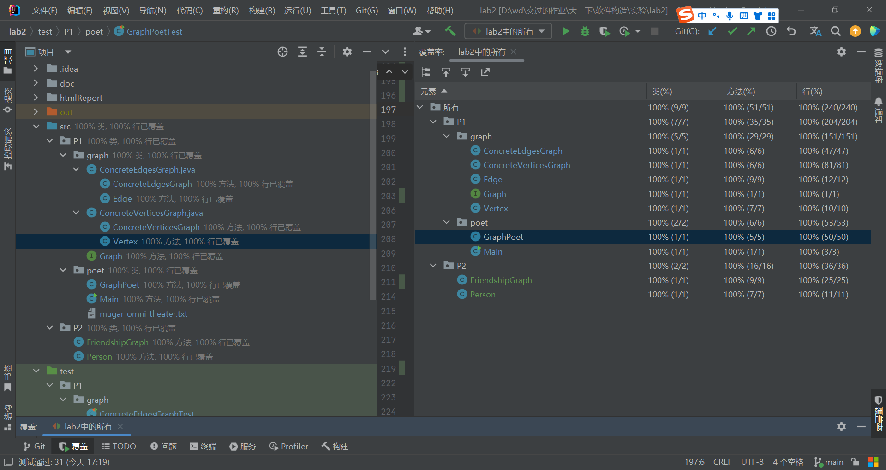

HIT-软件构造实验2-2023春
1 实验目标概述
本次实验训练抽象数据类型（ADT）的设计、规约、测试，并使用面向对象编程（OOP）技术实现ADT。具体来说：
l 针对给定的应用问题，从问题描述中识别所需的ADT；
l 设计ADT规约（pre-condition、post-condition）并评估规约的质量；
l 根据ADT的规约设计测试用例；
l ADT的泛型化；
l 根据规约设计ADT的多种不同的实现；针对每种实现，设计其表示（representation）、表示不变性（rep invariant）、抽象过程（abstraction function）
l 使用OOP实现ADT，并判定表示不变性是否违反、各实现是否存在表示泄露（rep exposure）；
l 测试ADT的实现并评估测试的覆盖度；
l 使用ADT及其实现，为应用问题开发程序；
l 在测试代码中，能够写出testing strategy并据此设计测试用例。
2 实验环境配置
配置实验环境：和实验1基本一致，使用IDEA开发环境。代码覆盖率工具使用IDEA自带的覆盖率测试，无需额外安装。
实验代码仓库地址：https://github.com/ComputerScienceHIT/HIT-Lab2-2021112946
3 实验过程
3.1 Poetic Walks
使用下载的代码框架。对接口Graph进行分别两种实现（ConcreteEdgesGraph和ConcreteVerticesGraph）并进行测试，并编写一个指定应用（GraphPoet）
3.1.1 Get the code and prepare Git repository
如何从GitHub获取该任务的代码、在本地创建git仓库、使用git管理本地开发：
在任意文件夹cmd，使用git从github仓库的ssh链接克隆代码框架
git clone git@github.com:rainywang/Spring2022_HITCS_SC_Lab2.git
在项目文件夹cmd，创建代码仓库
git init
3.1.2 Problem 1: Test Graph <String>
编写Graph<String>的测试类。编写提供空图的方法empty()；在GraphStaticTest中编写测试静态方法的内容，在抽象类GraphInstanceTset中编写其他测试内容，并对应两种图的实现做抽象测试类的两种实现。
3.1.3 Problem 2: Implement Graph <String>
两种方式实现Graph<String>。分别是ConcreteEdgesPragh和ConcreteVerticesGpaph。
3.1.3.1 Implement ConcreteEdgesGraph
先实现JavaBean类：Edge
1private L sourceVertex;2private L targetVertex;3private int weight;
然后编写ConcreteEdgesgraph实现graph
xxxxxxxxxx21private final Set<L> vertices = new HashSet<>();//顶点集2private final List<Edge<L>> edges = new ArrayList<>();//边集
编写graph中的所有方法的方法体
3.1.3.2 Implement ConcreteVerticesGraph
先实现JavaBean类：Vertex
xxxxxxxxxx21private L data;2private Map<Vertex<L>, Integer> targetVertexes;
然后编写ConcreteVerteicesgraph实现graph
xxxxxxxxxx11private final List<Vertex<L>> vertices = new ArrayList<>();
3.1.4 Problem 3: Implement generic Graph
实现泛型Graph<L>
3.1.4.1 Make the implementations generic
在各个相关源文件中，使用IDEA的搜索功能，搜索所有的String并选中，一次性替换成L。这里发现toString及其注释也被替换了，手动改回来。修改后即可完成泛型实现。
3.1.4.2 Implement Graph.empty()
在Graph的两个实现类中重写Graph.empty()。
3.1.5 Problem 4: Poetic walks
读入语料库并生成词的亲和图，据此对输入的英文文本进行解析并输出“诗意”的语句。
3.1.5.1 Test GraphPoet
编写对GraphPoet的测试类
3.1.5.2 Implement GraphPoet
实现GraphPoet
- 读取语料库，构建有向图
- 根据输入的语句，从语料库中匹配出合适的桥接词并插入语句，输出
3.1.5.3 Graph poetry slam
编写可运行内容：给定语料库，输入一段语句，输出处理后的语句
3.1.6 使用Eclemma检查测试的代码覆盖度
由于笔者使用的是IDEA作为开发环境，检查代码的覆盖度使用的是IDEA自带的代码覆盖率工具。测试结果均为100%覆盖、全部通过测试。


3.1.7 Before you’re done
按照http://web.mit.edu/6.031/www/sp17/psets/ps2/#before_youre_done的说明，检查程序。
通过Git提交当前版本到GitHub上的Lab2仓库
项目的目录结构：
项目名称： HIT-Lab2-学号
src
P1
graph
Graph.java
ConcreteEdgesGraph.java
ConcreteVerticesGraph.java
poet
GraphPoet.java
Main.java
Mugar-omni-theater.txt
test
P1
graph
ConcreteEdgesGraphTest.java
ConcreteVertucesGraph.java
GraphInstance.java
GraphStaticTest.java
poet
GraphPoet.java
3.2 Re-implement the Social Network in Lab1
使用实验2中的Graph及其实现类，对实验1的FriendshipGraph进行高效地复现，并对其进行测试。
3.2.1 FriendshipGraph类
成员方法根据要求提供了addVertex、addEdge、getDistence，根据需要提供getter和setter；
成员变量有一个int类型的变量，用于在递归调用深度优先搜索时共享数据；graph类型的成员变量，用于构建和存储关系图。
3.2.2 Person类
延续了实验1的设计，提供成员变量String类型的name存放姓名、boolean类型的isSearch用于搜索时存放是否遍历过，去除了在graph中实现的内容：与该节点链接的节点集合。
3.2.3 客户端main()
读取语料库文件，实例化一个GraphPoet；接着给定输入语句，使用GraphPoet进行处理并输出
3.2.4 测试用例
对每个成员方法设计测试，考虑较大图时的遍历、无关系节点的情况。
测试结果：覆盖率100%，测试全部通过


3.2.5 提交至Git仓库
通过Git提交当前版本到GitHub上的Lab3仓库。
在这里给出项目的目录结构树状示意图。
项目名称： HIT-Lab2-2021112946
src
P2
FriendshipGraph.java
Person.java
test
P2
FriendshipGraphTest.java
PerosnTest.java
4 实验进度记录
请使用表格方式记录你的进度情况，以超过半小时的连续编程时间为一行。
| 日期 | 时间段 | 计划任务 | 实际完成情况 |
|---|---|---|---|
| 已轶 | 已轶 | 编写了图泛型的测试和实现 | 全部完成 |
| 2023/4/1 | 已轶 | 完成图测试中的缺少部分 | 全部完成 |
| 2023/4/2 | 已轶 | 编写了诗意漫步的内容 | 完成了实现，未测试 |
| 2023/4/4 | 15:00-18:30 | 代码覆盖率提高到100%，完成实验报告剩余内容 | 全部完成 |
5 实验过程中遇到的困难与解决途径
| 遇到的难点 | 解决途径 |
|---|---|
| 对P1的题目具体内容不理解 | 看MIT的网页无果后，在代码框架源码中发现详细的说明。借助IDEA翻译插件阅读后理解。 |
| 代码覆盖率不足100% | 使用代码覆盖率工具测试后，阅读对未测试行的标记，并添加新的测试内容 |
6 实验过程中收获的经验、教训、感想
6.1 实验过程中收获的经验和教训（必答）
先编写测试再编写实现，便于在实现代码时考虑到更多的处理可能情况。
6.2 针对以下方面的感受（必答）
(1) 面向ADT的编程和直接面向应用场景编程，你体会到二者有何差异？
面向ADT复用性较高
(2) 使用泛型和不使用泛型的编程，对你来说有何差异？
使用泛型可以使ADT复用性提高
(3) 在给出ADT的规约后就开始编写测试用例，优势是什么？你是否能够适应这种测试方式？
考虑了可能出现问题的情况，考虑更加全面。减少了先实现再测试可能导致的惯性思维。逐步适应中，实现后发现有些内容没测试到，仍需进行补充
(4) P1设计的ADT在多个应用场景下使用，这种复用带来什么好处？
提高可维护性，提高编码效率。
(5) 为ADT撰写specification, invariants, RI, AF，时刻注意ADT是否有rep exposure，这些工作的意义是什么？你是否愿意在以后编程中坚持这么做？
使团队的同事能明白代码内容，使维护者（包括未来的自己）能容易地重新理解结构。
(6) 关于本实验的工作量、难度、deadline。
内容有点多，要写的东西挺多，说合适都是假的。难度和deadline我觉得可以接受。
(7) 《软件构造》课程进展到目前，你对该课程有何收获和建议？
收获：一定程度上掌握了软件开发的设计思想、开发的方法。